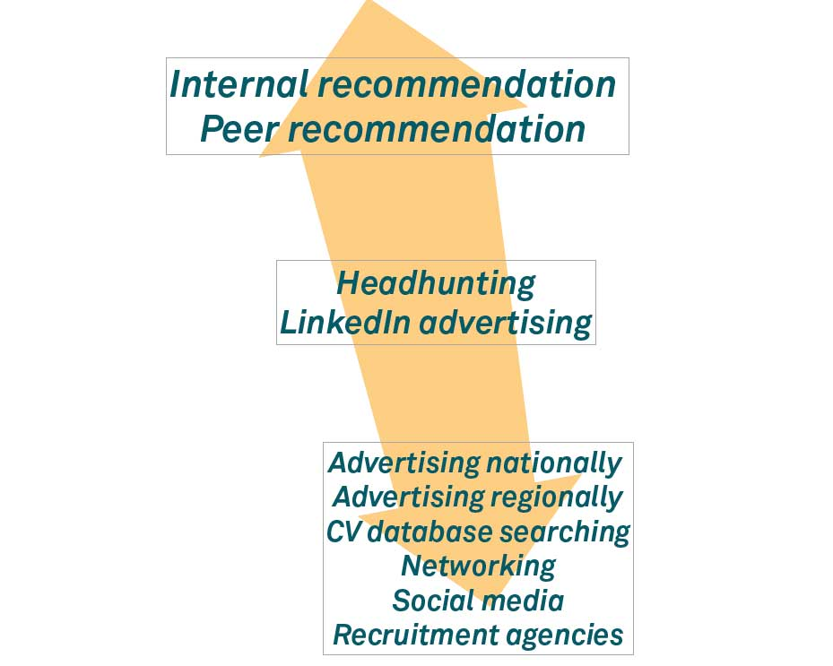
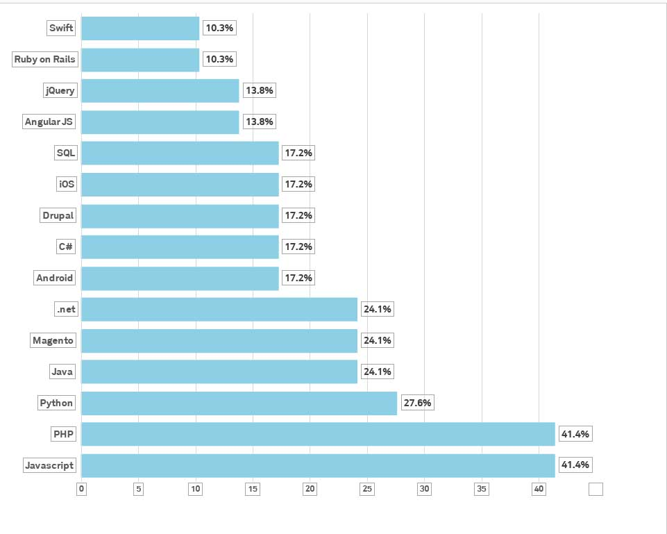

About the industry
In the digital industry, businesses continue to grow with an 83% growth rate in 2017. This is good news for me and other people wanting to go into the digital sectors as this growth has been continuing to grow this consistently since 2014. Being a developer accounts for 47% of these businesses, but other functions such as client services, creative and sales & marketing aren’t far behind. This shows just how big the digital industry is. As a first-year student, I thought that the digital industry was just about development, but reading through this report and reading other articles I have begun to understand just how big this industry is.
Most of the talent is local with only 10% coming from European countries. Recruiting talent is mainly done by peer recommendations rather than social media and recruitment agencies which are declining in influence. LinkedIn advertising is shown to be on the rise which is something I will have to consider for my future career ambitions. As of 2016 LinkedIn has 106.45 million visiting members. This is still way short of the likes of twitter who have around 328 million monthly active users. However, as this is the main platform of recruitment it is defintely something to think about getting involved in.
What I found to be very insightful was the types of tech digital companies use. 41.4% of respondents struggled to find developers that understood PHP and JavaScript. I found this very surprising that JavaScript is joint number one in this list. I myself have been studying JavaScript for the past year and I feel as though I have a good understanding of the language. As for PHP, I was part of a team that used PHP to create a website for the department of the course I am studying on which can be found on my past work section of the homepage. There are many languages on this list which I am unfamiliar with, but seeing as PHP and JavaScript are by far in the most demand I am confident I have the skillset needed to be a developer.
Problems faced
I always find it hard to create something that is original to me as there are other websites out there that are sure to have something almost identical to mine. This always makes me think that my ideas weren’t good enough or that I just stole the idea from another person. A talk by Chris Murphy on the term ‘imposter syndrome’. really put me to ease as I know that it isn’t only me who has this kind of anxiety. However, I still feel as though I won’t be ‘agency ready’ any time soon when I see examples of other people’s work and the fact that once I’m beginning to learn a language there are about 5 more that are now coming into the industry.
Solutions
Murphy’s ‘structure of the brain’ example was great for me when he used the driving analogy. ‘You eventually get to a part where it just happens’. Learning a new skill is never easy but if you practise over and over you will eventually get the hang of it. If a compare where I am now to three years ago I can see the progress I have made at being a web developer and all I have learned at Manchester Met.
Conclusion
To conclude, the skills audit report has given me the confidence that I can succeed in the industry and all I need to do is make sure that I keep trying to improve myself as there are a lot of jobs out there that need to be filled.